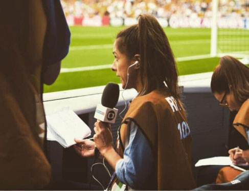
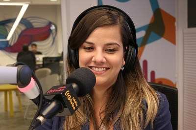

O Papel da Mulher na Editoria Esportiva
Beatriz Pessôa
Em uma profissão em que não há rotina, a carga horária é alta e o serviço é pesado, as mulheres também precisam driblar o preconceito masculino simplesmente para fazer seu trabalho. O problema dobra de tamanho quando se trata da editoria esportiva. Fato é que a luta incessante para as jornalistas se manterem em alto nível é enorme.

Uma pesquisa feita pela associação Gênero e Número, em parceria com a Associação Brasileira de Jornalismo Investigativo (Abraji), em 2017, revelou números elevados sobre casos de assédio moral e sexual que as profissionais sofrem em seus locais de trabalho. Nada menos que 92,3% das jornalistas afirmaram já ter ouvido algum tipo de piada machista nas redações brasileiras.
Os dados alarmantes não param por aí: 70,4% das jornalistas que responderam a pesquisa admitiram já ter recebido cantadas desconfortáveis no exercício da profissão e 70,2% das entrevistadas já presenciaram ou souberam de uma colega sendo assediada no local de trabalho, tanto por fontes quanto por outros jornalistas.
“Se você tiver o dom para as coisas, você faz tudo muito bem feito”, defende Maria Luiza, a primeira repórter de futebol na TV
Maria Luiza da Costa foi a primeira mulher a cobrir futebol na televisão brasileira. Sua primeira aparição no vídeo como repórter foi na Copa do Mundo de 1978, na Argentina. “Adorei a minha época como repórter de esportes. Eu não tinha rotina. Pegava sol, fazia treino em Marechal Hermes. Naquela época, os carros não tinham ar condicionado e a maquiagem escorria. Se você tiver o dom para as coisas, você faz tudo muito bem feito”, relembra a jornalista, hoje aposentada.
A jornalista, desde pequena, gostava de escrever e nutria uma paixão pelo esporte. Assim, na época do vestibular, entrou na faculdade de Comunicação e, ainda no começo da graduação, foi contratada como estagiária da Rádio Nacional, já na editoria esportiva. Seu primeiro ofício foi como repórter de campo, na cobertura dos clubes cariocas. “Por todo o conhecimento que eu já tinha de esporte, não foi difícil para mim”, conta Maria Luiza.
“Adorei a minha época como repórter de esportes. Eu não tinha rotina. Pegava sol, fazia treino em Marechal Hermes. Naquela época, os carros não tinham ar condicionado e a maquiagem escorria. Se você tiver o dom para as coisas, você faz tudo muito bem feito”
Pouco tempo depois, ela foi contratada pela Rede Globo, ainda como estagiária, e conquistou seu espaço. Maria Luiza mostrou seu talento e sua estrela brilhou na Copa de 1978. Ela foi como repórter para Córdoba e acompanhou o dia a dia de diversas seleções, como Alemanha, Peru, Irã e Tunísia. “Cada dia eu ia para um lugar e, quando chegava lá, todo mundo me olhava esquisito. A seleção do Irã foi a coisa mais engraçada. Fui fazer a chegada deles e eu estava de uniforme, sem véu, sem nada. Eles me cercaram para saber se meu pai e minha mãe me deixavam fazer aquilo, se eu não era casada e não tinha filhos e por que eu fazia um trabalho de homem e se tinha respeito. ‘Tem muito’, disse para eles. Eu tinha uma equipe grande, eles me tratavam superbem e tinham o maior carinho”, completa a jornalista.
Mesmo fazendo um excelente trabalho, Maria Luiza sofreu o infortúnio dos cortes repentinos que acontecem nas redações, sobretudo por ser mulher. “Quando chegou o fim do ano iam reduzir a equipe. Vamos mandar embora quem? A mulher, claro’, e eu saí de lá”, explica. Em 1979, foi contratada pela TV E, cobrindo esportes amadores. Lá, a ornalista trabalhou durante 19 anos. Maria Luiza casou-se com um cinegrafista e eles tiveram um filho. Ela optou por sair da reportagem, para dedicar mais tempo à família. Assim, pôde explorar uma área diferente da comunicação, que é a assessoria de imprensa. Ela trabalhou no Instituto Brasileiro do Meio Ambiente (IBAMA) até se aposentar.
Para quem está começando, Maria Luiza recomenda a editoria esportiva. Para ela, é a melhor área, mas alerta: “Tem que ler muito, tem que estar sempre informada e tem que checar a informação, isso é muito importante. Tem que encarar mesmo com seriedade”, finaliza.
“Eu amo o que eu faço”, explica Isabela Scalabrini, jornalista que abriu o caminho e tornou-se referência
Ela é conhecida pelo pioneirismo no cenário do jornalismo esportivo: foi a primeira mulher a apresentar o Globo Esporte, telejornal esportivo mais antigo da televisão brasileira. Mesmo não atuando mais nos noticiários esportivos, Isabela Scalabrini marcou a história e segue sendo referência e inspiração para outras jornalistas.
Com 30 anos de carreira, a jornalista carioca passou metade deles cobrindo esportes. Mesmo assim, ela demorou seis anos para trabalhar nas pautas futebolísticas. Antes ela cobria os chamados esportes amadores, como o vôlei, que sempre foi seu hobby. Muito carismática e competente, Isabela mostra a cada dia mais ser uma referência, porém não foi fácil perceber isso.
“Comecei a notar que eu era única ali no meio desse cenário do futebol. Aí que passei a entender o tamanho da minha responsabilidade. Depois disso, quando voltei, eu cobri a seleção (de futebol) e comecei a cobrir o futebol. Foi uma época muito interessante, mas a pergunta que eu ouvia sempre, sempre, sempre era: ‘Você entende de futebol?’”.
Além do Globo Esporte, Isabela ancorou o Esporte Espetacular, um programa esportivo que conta histórias e tem reportagens mais longas. Mesmo sendo apresentadora durante anos, ela continuou fazendo reportagens, o que, para ela, é a parte mais empolgante.
Ela relembra os tempos da editoria esportiva com muita alegria, mesmo tendo passado por dificuldades ao longo dos anos. Isabela conta que, principalmente em grandes eventos, como a Copa do Mundo do México, em 1986, ela era uma das únicas mulheres, e isso causava espanto.
“Foi uma época muito interessante. Minhas colegas dizem até hoje que, aos poucos, eu fui abrindo esse caminho e que as pessoas foram vendo que as mulheres entendem de futebol sim. Eu acho que as mulheres têm que ter mais oportunidade para fazer isso, tem que ter pessoas que acreditem nelas. Se a pessoa tem conhecimento, não importa o sexo, importa o que ela faz, e as mulheres estão aí para provar”.
Depois de sair da editoria esportiva, Isabela se mudou para Minas Gerais, onde apresentou o MGTV durante 22 anos, e hoje compõe o quadro de repórteres da Rede Globo no estado. A jornalista usou toda sua experiência para incentivar as mulheres que estão iniciando a carreira.“Ser jornalista esportiva é muito difícil. Todo dia é uma batalha, mas cada dia é diferente do outro. Se você gosta daquilo, continua, não desista. Continue fazendo o melhor que você pode, com vontade, mostrando que você sabe, que você pode e que é aquilo que você quer. Isso faz muita diferença. Eu amo o que eu faço, amo”, conclui.
“Ali a estrela brilhou. Tive sorte”, comemora Carol Barcellos
Um dos grandes nomes do jornalismo esportivo brasileiro, Carol Barcellos confessou que a editoria esportiva não era sua primeira opção. Muito pelo contrário, era a última. Ela iniciou o curso universitário pretendendo seguir carreira na editoria de economia e chegou a fazer cursos de extensão à graduação para aprofundar-se no tema, mas começou trabalhando com esporte e gostou tanto que está lá há quinze anos.

Carol na cobertura da Copa do Mundo feminina na França (Foto: Reprodução)Muito simpática e querida pelos colegas de trabalho, Carol apresenta o Globo Esporte aos sábados e o quadro de esporte no Bom Dia Brasil, além de seguir na reportagem do Grupo Globo. Mas antes de tornar-se uma referência, ela foi estagiária do SporTv. Carol exerceu diversas funções na empresa, como editora de texto e produtora. “É importante que você saiba como funciona todo o processo de uma matéria. Tem o trabalho de um repórter cinematográfico, de um produtor, de um editor de texto e de editor de imagem. É legal quando você migra e conhece várias (áreas) porque é o jeito de você realmente entender que televisão é um trabalho de equipe”, explica a jornalista.
E a estrela brilhou mesmo quando a repórter apresentou o programa Planeta Extremo, ao lado de Cleyton Conservani. A dupla percorreu o mundo em busca de aventuras, trazendo boas histórias para contar. “Era a chance de fazer um projeto lindo, superforte, muito diferente de tudo que já tinha sido feito na televisão e ao mesmo tempo poder aprender pra caramba. Ali a estrela brilhou. Tive sorte”, compartilha.
Quando perguntada sobre o crescimento do número de mulheres nas redações esportivas, Carol ressalta que é uma conquista que está acontecendo em toda a sociedade, não apenas no jornalismo esportivo, mas que já deveria ter acontecido há muito tempo. Para ela, cada pessoa tem sua singularidade e seu próprio jeito de contar histórias independentemente do gênero, mas que é natural o aumento de mulheres no esporte. “A gente está caminhando e eu não consigo ver diferença entre uma mulher e um homem fazendo jornalismo esportivo porque são pessoas contando histórias”, conta.
“Eu acredito que as mulheres estão ficando cada vez mais preparadas para tudo que vão fazer, e no jornalismo esportivo isso não é diferente”, comenta Júlia Guimarães
Decidida, Júlia Guimarães já sabia, desde nova, a carreira que queria seguir. Apesar de ser de uma família de advogados, ela optou por fazer jornalismo. A escolha da profissão veio ainda na adolescência, e ela teve que lidar com a resistência dos pais na época do vestibular. Júlia, que sempre foi apaixonada por esportes, sobretudo por futebol, iniciou a faculdade de Comunicação já sabendo que a editoria esportiva seria sua preferida. Hoje, olhando para trás, ela se sente realizada por ter escolhido o jornalismo. “Ainda bem! Foi uma maneira de estar perto não só do futebol, mas de todos os outros esportes, que sempre gostei de praticar”, comemora Júlia, que hoje é repórter esportiva da TV Globo.
A jornalista mineira começou a carreira trabalhando com assessoria de imprensa, mas logo viu que gostava mesmo é de televisão. Júlia trabalhava como editora de texto de um jornal local, na Band Minas, quando apareceu uma grande oportunidade. No plantão de réveillon, o editor chefe do programa “Os Donos da Bola” convidou-a para participar como comentarista da mesa- redonda, porque um dos convidados não pôde comparecer. “Eu estava na redação tranquila e o editor chefe do programa me chamou. Aí pronto, eu comecei a passar mal, a dar dor de barriga, falta de ar, mão começou a suar (risos). Foi muito legal!”, relembra a experiência.
Júlia passou a compor o elenco fixo do programa, mas ficou pouco tempo, pois passou no processo seletivo do Grupo Globo e se mudou para o Rio de Janeiro. Atualmente, ela faz parte da equipe de reportagem da editoria esportiva da emissora carioca. São 30 repórteres, sendo 21 homens e nove mulheres. “Ainda há uma diferença muito grande, mas diminuiu. Nos últimos meses chegaram algumas colegas novas. Então, aos pouquinhos, acho que esse espaço para a mulher está aumentando”.
Ao passo que as mulheres estão alargando o caminho, elas ainda sofrem ataques machistas, mas seguem resistindo. Júlia mostrou muita destreza ao ser vítima de assédio sexual na Copa da Rússia, em 2018. Faltavam dois minutos para ela entrar ao vivo, em sua estreia no “Esporte Espetacular”, quando um homem tentou beijá-la a força.
“Eu me senti desrespeitada, fraca, indefesa. Estava ali no meio de torcedores do mundo inteiro, e em grandes eventos assim as pessoas acham que está tudo liberado, que não tem gente trabalhando ali. Me surpreendi com a minha reação. Isso nunca tinha acontecido comigo aqui no Brasil. Eu dei uma bronca em inglês e sem falar palavrão. Só depois de ter acontecido comigo que eu parei para pensar e parei para lutar, mostrar a minha opinião e dizer o que penso sobre isso”, desabafa a jornalista.
Muita gente ainda se incomoda com a presença das mulheres no ambiente esportivo. Júlia diz que assiste a conteúdos esportivos mesmo quando não está trabalhando, e percebe essa diferença no tratamento. Ela sente que a mulher é muito mais cobrada. “Eu gosto de consumir o esporte e as outras mulheres também são assim. Então a gente sabe dessa cobrança, que é historicamente muito maior, não só no jornalismo, como na vida. Eu acredito que as mulheres estão ficando cada vez mais preparadas para tudo que vão fazer e no jornalismo esportivo isso não é diferente. Acho que a qualidade hoje é igual”.
“Talvez a mulher tenha uma sensibilidade maior. A gente vê as coisas de uma maneira diferente nesse sentido”, explica Luciana Vermell, a única repórter cinematográfica esportiva do Grupo Globo
“A gente vinha vendo desde os anos 1970 um papel predominante dos homens, porque antigamente a mulher não era muito representada, mas agora a gente tá aos pouquinhos crescendo e sendo mais bem representada aí no ambiente esportivo”, comemora a repórter cinematográfica Luciana Vermell. Para ela, o aumento de mulheres nas redações é importante, pois traz um olhar diferente sobre o assunto.
Luciana é a única repórter cinematográfica na equipe de esportes do Grupo Globo, onde trabalha atualmente. Ela começou como fotojornalista no Pan-Americano do Rio de Janeiro, em 2007 e trabalhou em outros grandes eventos como os Jogos Olímpicos de Londres, em 2012 e o Pan-Americano de Guadalajara, em 2011. Mesmo sendo fotojornalista, Luciana acabava trabalhando com vídeo também, porém foi em 2016 que ela tornou-se repórter cinematográfica de fato, e exerce o ofício desde então.
Mesmo com 12 anos de experiência na área, duas graduações e mestrado, Luciana relata que ainda há homens que menosprezam a capacidade profissional dela. “Já tive problemas, inclusive impasses com um assistente que acha que você precisa fazer daquela maneira, porque você é mulher. ‘Você não consegue fazer isso assim, mas os outros conseguem’.Eu já ouvi isso e falei ‘Olha, não é porque eu sou mulher que eu não consigo fazer isso, é porque isso não dá para fazer da maneira que você está achando que dá’. As pessoas às vezes te julgam se você é mulher. Não é todo dia, mas vez ou outra escapa um machismo assim”, desabafa.
Apesar de todas as dificuldades, Luciana explica o porquê de ser necessário ter ainda mais mulheres cobrindo o esporte, tanto na reportagem como por trás das câmeras. “Temos um papel muito importante na editoria esportiva porque trazemos uma visão que é única. É diferente do que a gente está acostumado a ver. Eu acho que a diferença seria basicamente no olhar. Talvez a mulher tenha uma sensibilidade maior. A gente vê as coisas de uma maneira diferente nesse sentido”, conclui a repórter cinematográfica.
“Eu acho que esse lado (feminino) poderia ser muito bem aproveitado e trazer mais diversidade para o jornalismo”, opina Lica Oliveira sobre a atuação das mulheres no jornalismo esportivo

Uma mulher que não cabe em uma descrição breve, Lica Oliveira é jornalista, atriz e ex-atleta. Ela começou a jogar vôlei aos 12 anos e, sem saber o que viria pela frente, dedicou-se ao esporte. Tornou-se jogadora profissional, disputou campeonatos e até mesmo Jogos Olímpicos. Lica, além de atleta, sempre se sentiu conectada com o mundo artístico e, com a curiosidade aguçada, não poderia fazer outra graduação senão Comunicação Social. Para ela, está tudo interligado e hoje ela consegue ver como essas áreas dialogam. Aos 50 anos, Lica está atuando no teatro.
Em 2006, Lica foi apresentadora do Esporte Espetacular, um dos programas esportivos da TV Globo. Ela sempre percebeu que a mulher tem um olhar diferenciado. "A mulher tem um olhar além das jogadas, além dessa coisa visceral e física o tempo inteiro. Eu acho que esse lado poderia ser muito bem aproveitado e trazer mais diversidade para o jornalismo", opina. E essa visão diferente, para Lica, pode até mesmo dominar o jornalismo esportivo. "Ter essa opinião (feminina) na mesa-redonda, ter uma, duas, três, e, quiçá, a maioria mulher e a minoria homem", completa.
“A gente tem que aproveitar ao máximo e nunca achar que sabe tudo”, diz Emanuelle Ribeiro sobre trabalhar com jornalismo esportivo
A jornalista Emanuelle Ribeiro chegou ao Rio de Janeiro há dois anos para trabalhar no GloboEsporte.com. Ela veio do interior de Minas e se adaptou tão rápido à dinâmica carioca quanto ao jornalismo online. “Eu nunca tinha trabalhado com web antes de vir para cá, sempre quis fazer rádio. Quando apareceu a oportunidade eu vim e me surpreendi bastante, porque hoje toda comunicação é online: rádio, TV, jornal...Tá tudo agora na internet. É legal a possibilidade de publicar uma coisa no mesmo momento”.
Com a evolução da comunicação, o jeito de fazer jornalismo tem variado em cada meio de comunicação, mas ofuro jornalístico continua sendo um dos grandes momentos da carreira. Emanuelle conta que no mundo da internet isso é mais complicado. “É muito difícil existir o furo jornalístico. Só quando é uma matéria muito especial, alguma coisa assim. Agora um jogador cortado do time você dá e um minuto depois todo mundo já deu. O furo dura muito menos tempo do que no jornal impresso, mas é bem legal. Acho que é o futuro da comunicação”.
Desde o início de 2019, a jornalista mineira é setorista do Botafogo, sendo a única mulher na equipe de repórteres do GE.com. Ela relembra os casos em que houve diferenciação por gênero e lamenta: “Já passei por algumas histórias engraçadas que acontecem na cobertura no dia a dia, de ouvir no estádio‘Ah, você não pode acessar essa área aquiporque pode ser que tenha algum jogador que vá passar sem camisa’, sendo que outros repórteres homens acessam.Ele tá me impedindo de fazer o meu trabalho porque eu sou mulher”, desabafa a jornalista.
A distinção por ser mulher na cobertura não para por aí. Emanuelle conta que muitas vezes precisa simplesmente ignorar o assédio, porque precisa fazer seu trabalho. “Já aconteceu também de homens, jogadores, gente mesmo dos times darem em cima. A gente entra em contato para uma informação e já entendem de outra maneira. Isso já aconteceu. Aí a gente finge que não ouviu, infelizmente, porque dependemos daquela fonte, daquela informação”.
Apesar de todas as dificuldades que as mulheres enfrentam todos os dias para trabalhar com jornalismo esportivo, Emanuelle, que sempre gostou da área, mantém o otimismo. “Quando cheguei aqui parecia que estava começando do zero, mas aos poucos fui aprendendo e melhorando. Então isso aqui é uma escola muito boa. A gente tem que aproveitar ao máximo e nunca achar que sabe tudo, isso é fundamental”, finaliza Emanuelle.
“Vou lutar contra essas pessoas que ficam falando que eu não deveria estar ali”, explica Luiza Sá, que acredita que as mulheres devam reivindicar o espaço no jornalismo esportivo
A jovem jornalista Luiza Sá, de 22 anos, acredita no potencial feminino, tanto nas redações quanto nas arquibancadas. “´É um reflexo de como a mulher está ocupando espaços que antes eram muito masculinos”. Desde muito nova, ela frequenta estádios e, de um tempo para cá, ela percebeu que o cenário está mais favorável para as mulheres. Essa paixão pelo esporte que a fez optar pela graduação em jornalismo. Hoje, formada, Luiza é repórter do Diário Lance!, na cobertura do Vasco da Gama, mas ela começou no jornal em 2015, como estagiária. Passou por diversas áreas e acredita que isso foi determinante para que ela adquirisse experiência.
Apesar de nova, a jornalista carioca já tem duas edições de Copa América no currículo: a de 2016, nos Estados Unidos, e a de 2019, no Brasil. Ela fez as duas coberturas in loco e acredita ter evoluído bastante entre uma e outra. “Já tinha feito uma Copa América antes, mas eu tinha 18 anos. Foi minha primeira cobertura de estádio, então foi muito iniciante, mas neste ano fui pra Copa América aqui no Brasil, no Rio e foi incrível. Pude ir pelo reconhecimento do meu trabalho. É muito especial você chegar nesse nível de cobertura”, conta Luiza.
Para chegar até aqui, a jornalista passou por várias situações que a fizeram repensar se estava mesmo na profissão certa. “A gente se acostuma com uns olhares meio esquisitos, com umas pessoas fazendo piadas que para a gente não são piadas. Acho que fiquei um pouco calejada. Antigamente, quando comecei, eu sentia muito. Chegava em casa e ficava me questionando, mas hoje eu já estou muito certa do que faço. Sei que é isso e vou lutar contra essas pessoas que ficam falando que eu não deveria estar ali”, garante Luiza, que agora prefere encarar o preconceito de frente e enfrentar atos misóginos. Para ela, a solução é debater o assunto, a fim de quebrar estereótipos.
“Percebi que eu teria poucas oportunidades, e que eu teria que aproveitar muito bem as que eu tivesse”, explica Camila Carelli, que usou as chances que teve para romper padrões no rádio carioca

Camila Carelli na Rádio Globo (Foto: Reprodução)Camila Carelli é um dos grandes nomes do rádio carioca. Ela foi a primeira mulher a cobrir um clube na Rádio Globo do Rio de Janeiro e a ancorar uma jornada esportiva também. Hoje é repórter da Radio Globo, cobrindo o Botafogo. Muito simpática e alegre, Camila busca quebrar paradigmas todos os dias, sobretudo no rádio, no qual há uma grande identificação com a voz masculina e certa apatia com a voz feminina. "Abrir a jornada é algo que sempre foi muito masculino, então ninguém apostava que fosse acontecer tão cedo, nem eu mesma", conta a jornalista.
Foi uma surpresa boa, que abriu o caminho para que a jornalista mostrasse seu talento. Camila sempre soube que precisava estar preparada, pois, por ser mulher, teria menos oportunidades na profissão do que os homens. "O mercado para a mulher no jornalismo esportivo tem características muito peculiares. Desde que comecei, em 2010, era ainda pior do que o que a gente tem agora, em 2019, mas o que sempre percebi desde que entrei na faculdade é que eu teria poucas oportunidades, e que eu teria que aproveitar muito bem as que eu tivesse", explica Camila.
Além de terem menos chances no ambiente esportivo, as mulheres precisam mostrar o tempo todo que entendem do assunto e por que estão ali. "E quando você tem a oportunidade, tem aquela coisa de você ter que provar, ter que estar sempre se superando, porque se houver qualquer deslize você é cobrada de uma forma diferente. Você muitas vezes é julgada pelo gênero e não por seu trabalho", completa.
Há dez anos na Rádio Globo, Camila atualmente é setorista do Botafogo, mas já cobriu Fluminense e Vasco da Gama, além de ser comentarista do programa "Quatro em Campo", da Rádio CBN e repórter no Globo Esportivo, da Rádio Globo.